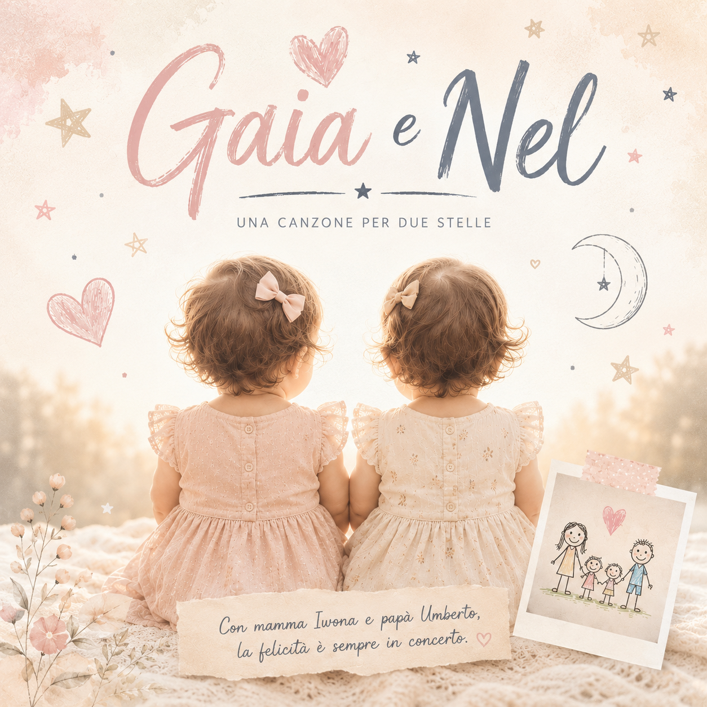

Una canzone per due stelle
Con mamma Iwona e papà Umberto,
la felicità è sempre in concerto.

C'erano due stelle dentro un pancione,
pronte a fare un po' di rivoluzione.
Una si prendeva un po' più di spazio,
e così nacque il soprannome "Gaiona" per caso.
L'altra la seguiva senza fare rumore,
ma aveva già nascosto un superpotere.
Due sorelline atterrate quaggiù,
e da quel giorno non ci annoiamo più.
Gaia e Nel, Gaia e Nel,
oggi cantiamo soltanto per voi.
Con un sorriso conquistate il mondo,
con un urlo ci svegliate in un secondo!
Gaia e Nel, Gaia e Nel,
mano nella mano come due stelle.
Con mamma Iwona e papà Umberto,
la felicità è sempre in concerto.
E poi c'era quel nome da spiegare un po',
alla Nò che ci pensava e non capiva però.
"Ma Nel cosa vuol dire?" chiedeva lei.
Umberto sorrideva: "Come nel cassetto", direi.
Problema risolto, applausi e allegria,
un'altra storia da raccontare in compagnia.
Ma il vero mistero nessuno lo sa,
come facciate a urlare con tanta intensità!
Gaia i Nel, Gaia i Nel,
dzisiaj śpiewamy tylko dla was.
Jednym uśmiechem podbijacie świat,
jednym krzykiem budzicie nas!
Gaia i Nel, Gaia i Nel,
ręka w rękę jak dwie gwiazdy.
Z mamą Iwoną i tatą Umberto,
szczęście gra z nami każdego dnia.
E quando parte l'urlo stellare,
si sente persino oltre il mare.
C'è chi sorride e chi non ci crede,
ma voi riempite ogni stanza di luce.
Gaia e Nel, Gaia e Nel,
crescete libere come il vento.
Tra mille strade che arriveranno,
avrete sempre un posto nel tempo.
Gaia e Nel, Gaia e Nel,
con gli occhi curiosi rivolti al cielo.
Qualunque strada vi porti lontano,
troverete sempre l'altra per mano.